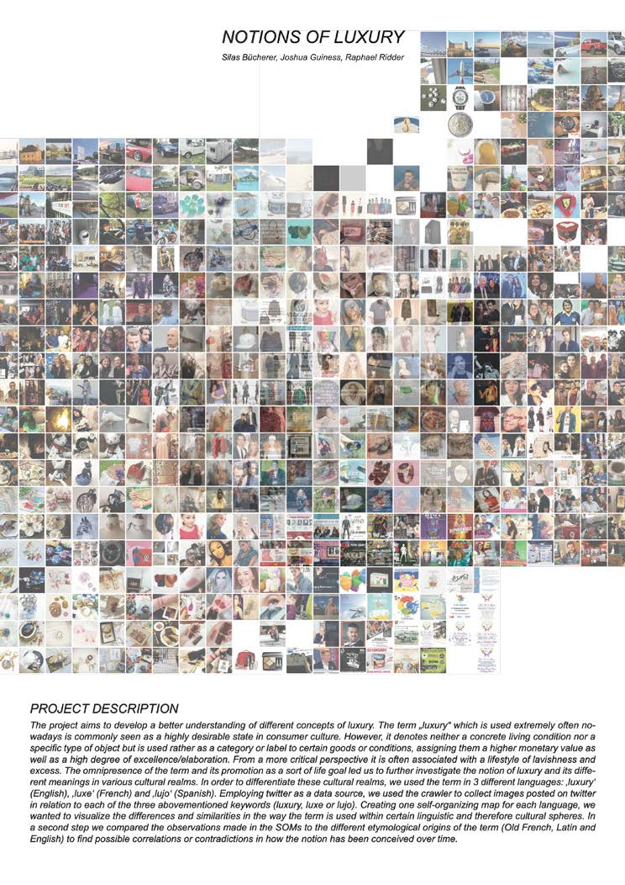
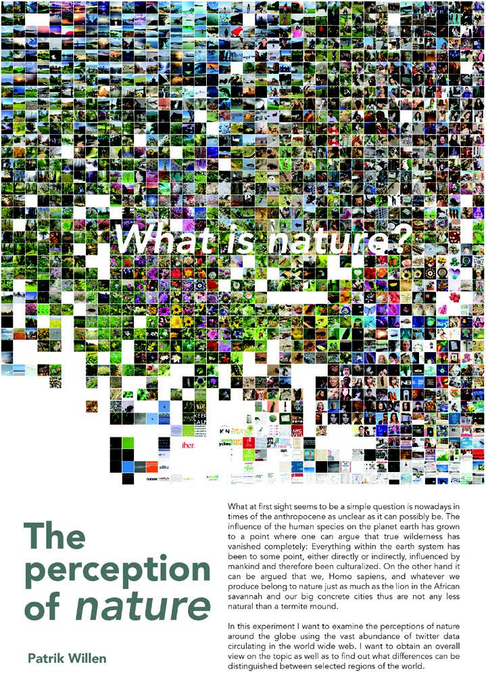
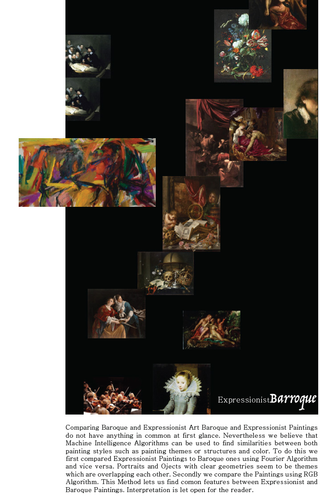
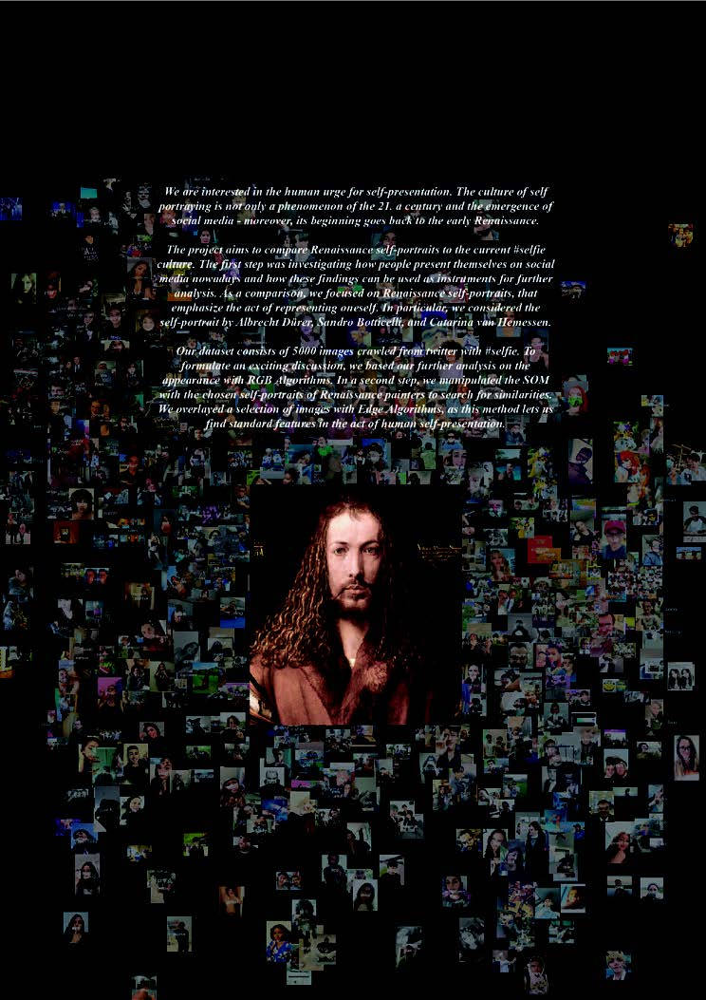

The three-semester course CAAD-Praxis: Map & Models questions our role as architects in the age of global network and big data where everything is connected, by asking what if everything is already there? And how do we inhabit in this new digital continent which contains everything we know?
Map & Models quots Alfred Korzybski's notion of "The map is not the territory" as the argument to discuss the relation between map (data) and model (information). This body of think guides Map & Models to dig into the abundance of urban imagery data to create personal models of any city though articulating questions around our interests.
As the technical counterpart, Map & Models also introduces crawling techniques and machine intelligence algorithms that classify and cluster objects to allow the students implementing their own ideas.
Work samples by the students
notion of luxury
the perception of nature
Baroque and Expressionist Art
self-presentation
